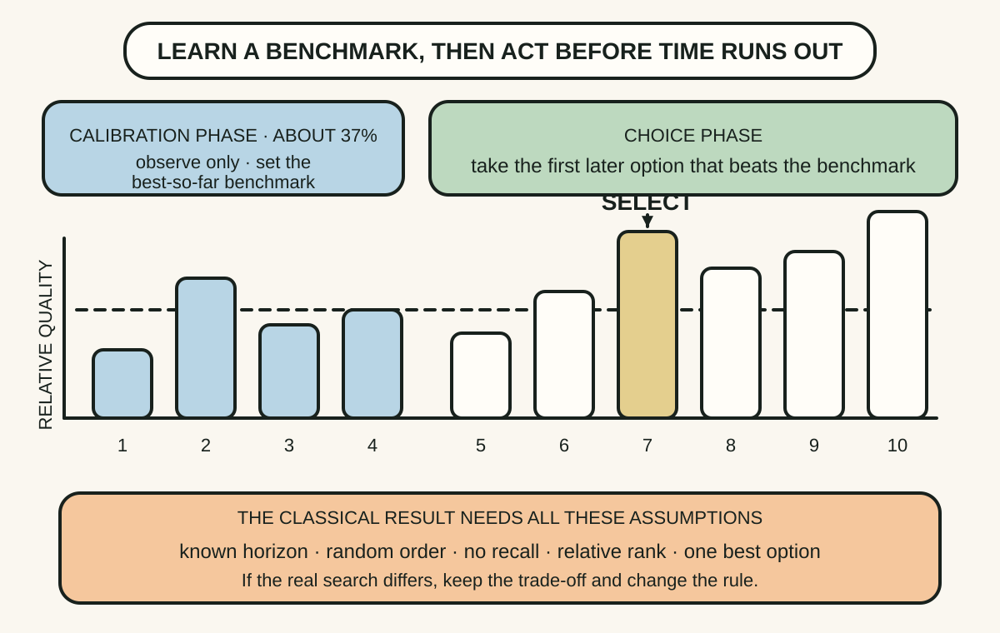
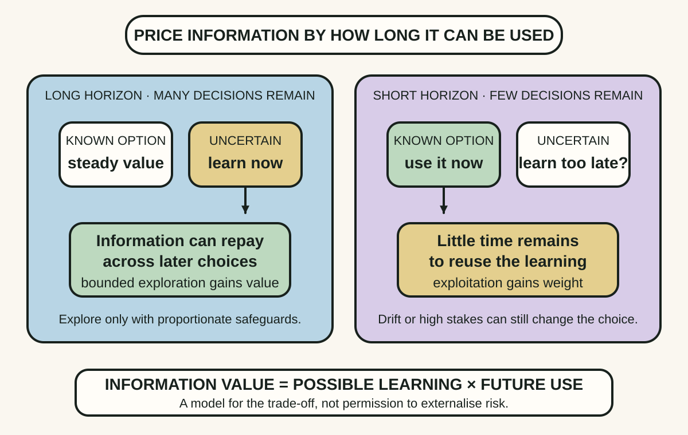
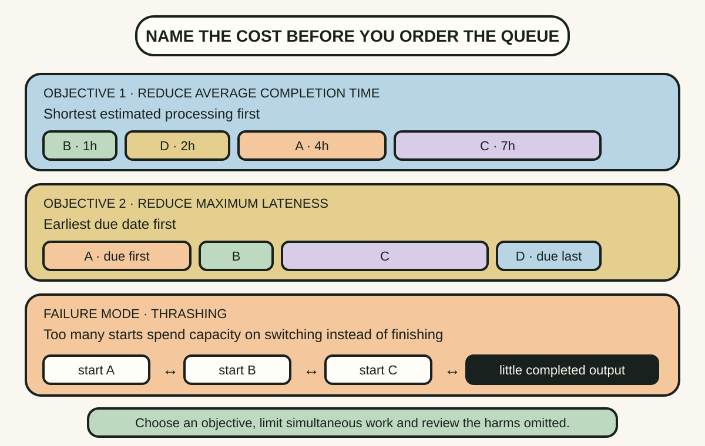

Daily lesson ·
Algorithms to Live By
Use mathematical problem structure to decide when to stop searching, how much uncertainty to explore and which scheduling rule fits the cost you actually want to reduce.
Idea 1
Separate learning from choosing #
The idea
The book uses the secretary problem to teach optimal stopping. Under strict conditions, a known number of options arrives in random order, each rejected option is gone, only relative rank matters and the goal is to maximise the chance of choosing the single best. The optimal rule samples roughly the first 37 per cent without selecting, then chooses the next option better than every sampled option.
The durable idea is not that every search ends at 37 per cent. It is that search has two jobs: learn the distribution and act before opportunity disappears. Naming the assumptions prevents a clean result from being copied into decisions with recall, changing quality, unknown horizons or several acceptable outcomes.

Why it matters
Without a planned learning phase, the first plausible option can anchor the search. Without a stopping rule, every new option preserves doubt and delays value. A threshold makes the trade-off explicit.
Apply it today
Choose one upcoming search with a real deadline and estimate how many comparable options you can inspect.
Reserve an early sample for calibration, define what later option would beat its benchmark and list any reason rejected options could be revisited.
Caveat or failure mode
The 37 per cent rule is optimal only for a narrow objective and harsh no-recall assumptions. Hiring, housing and relationships involve ethics, thresholds, unequal information, negotiation and repeat opportunities. Do not turn a mathematical thought experiment into an automatic human policy.
Idea 2
Let the horizon price exploration #
The idea
The explore-exploit trade-off appears in multi-armed bandit problems. Exploitation chooses the option with the best observed reward; exploration tries an uncertain option that might teach enough to improve later choices. The value of information depends on how many decisions remain.
With a long horizon, learning about an uncertain alternative can repay its short-term cost many times. Near the end, there are fewer future choices through which to recover that cost, so using the best-supported option becomes more attractive. Uncertainty is therefore not automatically a reason to avoid an option; it can be the source of information value.

Why it matters
Teams often argue about innovation as a personality preference. Horizon and information value turn part of that argument into a decision model: how many future choices can use what this experiment teaches?
Apply it today
List one repeated choice, the current favourite and one uncertain alternative whose result would change later decisions.
Estimate how many uses remain and choose a small exploration only if the learning can be reused enough to justify its risk and cost.
Caveat or failure mode
Bandit models simplify changing environments, dependent choices, delayed feedback and unequal harms. Exploration is not permission to impose risk on others without consent or safeguards, and a long horizon does not make every experiment worthwhile.
Idea 3
Choose the scheduling rule for the cost #
The idea
Scheduling theory shows that there is no universally best order without an objective. If the aim is to minimise average completion time for available jobs, shortest processing time first performs well. If the aim is to minimise maximum lateness against due dates, earliest due date first fits that objective. A priority rule is an optimisation claim, whether or not it is named as one.
The book also describes thrashing: when switching and coordination consume so much capacity that little useful work completes. In overloaded systems, restricting work in progress or batching related tasks can improve throughput even when every waiting item appears urgent.

Why it matters
Arguments about priority often hide different definitions of success. Making the objective explicit reveals why two sensible people choose different orders and whether constant switching is preventing either rule from working.
Apply it today
Take four current tasks and write duration, due date and cost of delay for each.
Order them once for average completion and once for lateness, then choose the objective that matters now and limit simultaneous starts.
Caveat or failure mode
Durations and costs are estimates, urgent safety work may override a queue and human tasks are not interchangeable jobs. Optimising one metric can starve large work, neglect fairness or reward gaming, so use ageing, review points and explicit exceptions.
Knowledge check · 6 questions
Learning check
Answer all 6, then check your answers. Your first result stays in this browser, and each explanation appears after you check. A 3-question review can appear on the homepage from tomorrow.
6 questions not yet answered.
Today's experiment · 10 minutes
Run one decision through three algorithms
- Choose a bounded search or repeated decision and write its horizon, recall rules and success objective.
- Mark what an early calibration sample would teach and the threshold that would trigger action.
- Name one uncertain option and how many later choices could use information from a small trial.
- List four waiting tasks, order them for average completion and for lateness, then circle the objective you actually need today.
Observable result: You finish with one explicit stopping threshold, one priced exploration and a queue order tied to a named cost.
Retrieval practice
Spaced recall
- From The Art of Statistics: which assumptions must hold before a numerical summary can answer the decision you care about?
- From The Goal: how can local busyness increase while the system's completed output gets worse?
Verification
Source notes
These links support the attributed claims and edition details; applications and extensions are labelled in the lesson.
One-sentence takeaway